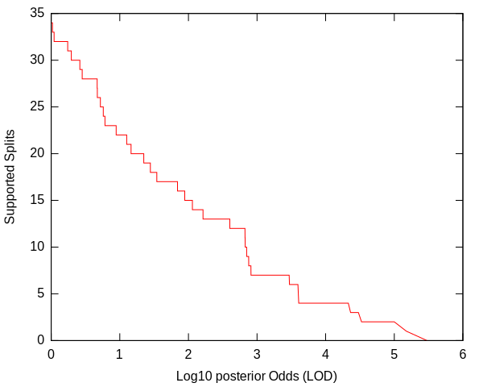
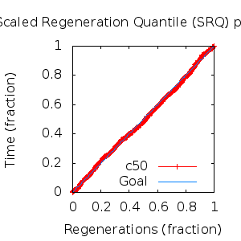
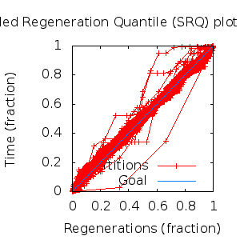

MCMC Post-hoc Analysis: 40 sequences
Data & Model
| Partition | Sequences | Lengths | Alphabet | Substitution Model | Indel Model | Scale Model |
|---|
| 1 |
E5_alpha1_alpha2_gammadelta_delta_epsilonzeta_aa.fas |
43 - 165 |
Amino-Acids | S1 = lg08+f |
I1 = rs07 |
scale1 ~ gamma[0.5,2] |
Scalar variables
| Statistic | Median | 95% BCI | ACT | ESS | burnin | PSRF-CI80% | PSRF-RCF |
|---|
| prior |
-237 |
(-285.3, -193.1) |
19.13 |
14116 |
207
|
1 | 0.9981
|
| prior_A1 |
-436.3 |
(-478.7, -400.5) |
11.93 |
22632 |
176
|
1 | 0.9989
|
| likelihood |
-4697 |
(-4724, -4671) |
13.45 |
20075 |
189
|
0.9999 | 0.9993
|
| posterior |
-4934 |
(-4978, -4895) |
24.08 |
11212 |
347
|
1 | 0.9991
|
| Heat.beta |
1 |
| | | | | |
| Scale[1] |
11.06 |
(8.072, 14.54) |
1.107 |
243866 |
157
|
1 | 1
|
| f:pi[A] |
0.05758 |
(0.04436, 0.07159) |
7.791 |
34656 |
333
|
0.9996 | 0.9953
|
| f:pi[R] |
0.04386 |
(0.03037, 0.05929) |
7.757 |
34809 |
403
|
0.9996 | 1.009
|
| f:pi[N] |
0.02872 |
(0.01874, 0.04007) |
8.057 |
33513 |
319
|
0.9996 | 1.003
|
| f:pi[D] |
0.03395 |
(0.01976, 0.05013) |
7.703 |
35053 |
432
|
1 | 0.997
|
| f:pi[C] |
0.04998 |
(0.03723, 0.06399) |
8.196 |
32942 |
332
|
0.9997 | 1.007
|
| f:pi[Q] |
0.04102 |
(0.02894, 0.05435) |
7.927 |
34060 |
467
|
0.9998 | 1.002
|
| f:pi[E] |
0.01579 |
(0.007162, 0.02616) |
8.09 |
33373 |
414
|
1 | 0.9993
|
| f:pi[G] |
0.04176 |
(0.02673, 0.05873) |
8.255 |
32708 |
493
|
1 | 1.002
|
| f:pi[H] |
0.03446 |
(0.02353, 0.04656) |
8.551 |
31576 |
427
|
1 | 0.9957
|
| f:pi[I] |
0.05501 |
(0.04461, 0.06598) |
8.673 |
31130 |
320
|
1 | 1
|
| f:pi[L] |
0.1752 |
(0.1526, 0.1985) |
7.729 |
34935 |
189
|
1 | 1.006
|
| f:pi[K] |
0.03181 |
(0.02027, 0.045) |
8.206 |
32901 |
424
|
1 | 1.004
|
| f:pi[M] |
0.01699 |
(0.01161, 0.02293) |
8.021 |
33662 |
388
|
0.9998 | 1.004
|
| f:pi[F] |
0.06572 |
(0.05227, 0.08048) |
8.356 |
32311 |
389
|
1 | 1.004
|
| f:pi[P] |
0.03218 |
(0.0191, 0.0474) |
7.916 |
34109 |
396
|
0.9996 | 0.9955
|
| f:pi[S] |
0.05746 |
(0.0442, 0.07187) |
8.295 |
32551 |
332
|
1 | 1.002
|
| f:pi[T] |
0.07137 |
(0.05697, 0.08696) |
7.771 |
34742 |
332
|
1 | 1.005
|
| f:pi[W] |
0.01857 |
(0.01038, 0.02803) |
7.67 |
35203 |
572
|
1 | 0.9929
|
| f:pi[Y] |
0.03458 |
(0.02494, 0.04508) |
8.172 |
33041 |
582
|
0.9997 | 1.004
|
| f:pi[V] |
0.08743 |
(0.07299, 0.1024) |
8.218 |
32855 |
461
|
1 | 1.003
|
| rs07:mean_length |
6.926 |
(5.18, 9.094) |
2.313 |
116739 |
226
|
1 | 0.9984
|
| rs07:log_rate |
-3.801 |
(-4.114, -3.479) |
2.51 |
107573 |
152
|
0.9998 | 1.001
|
| |A1| |
264 |
(232, 285) |
26.57 |
10163 |
205 |
0.975 | 0.9974
|
| #indels1 |
49 |
(43, 54) |
13.01 |
20759 |
176 |
0.875 | 1.001
|
| |indels1| |
319 |
(292, 354) |
3.954 |
68294 |
146 |
0.9756 | 1.002
|
| #substs1 |
836 |
(816, 861) |
23.45 |
11513 |
311 |
0.9697 | 1.001
|
| Scale1*|T| |
12.42 |
(11.38, 13.51) |
2.952 |
91473 |
94
|
1 | 0.998
|
| |A| |
264 |
(232, 285) |
26.57 |
10163 |
205 |
0.975 | 0.9974
|
| #indels |
49 |
(43, 54) |
13.01 |
20759 |
176 |
0.875 | 1.001
|
| |indels| |
319 |
(292, 354) |
3.954 |
68294 |
146 |
0.9756 | 1.002
|
| #substs |
836 |
(816, 861) |
23.45 |
11513 |
311 |
0.9697 | 1.001
|
| |T| |
1.124 |
(0.824, 1.453) |
1 |
270003 |
78
|
0.9996 | 1.002
|
Phylogeny Distribution


Alignment Distribution
Partition 1
|
|
|
Diff |
|
Min. %identity |
# Sites |
Constant |
Informative |
| Initial |
FASTA |
HTML |
Diff |
|
1.39% |
165 |
1 (0.606%) |
162 (98.2%) |
| Best (WPD) |
FASTA |
HTML |
|
AU |
0.787% |
272 |
1 (0.368%) |
237 (87.1%) |
Mixing
Statistics: | scalar burnin | 582 | | scalar ESS | 1.016e+04 | | topological ESS | | | ASDSF | NA | | MSDSF | NA | | PSRF CI80% | 1 | | PSRF RCF | 1.009 |
|  |
Analysis
directory: /work/awillemsen/bali-phy/AlphaPVs_E5_aa_new
version: 3.3
| chain # | burnin | subsample | Iterations (after burnin) | command line | subdirectory |
|---|
| 1 |
10000 |
1 |
90000 |
bali-phy E5_alpha1_alpha2_gammadelta_delta_epsilonzeta_aa.fas -s 14741 -i 100000 -n AlphaPVs_E5_alpha1_alpha2_gammadelta_delta_epsilonzeta |
AlphaPVs_E5_alpha1_alpha2_gammadelta_delta_epsilonzeta-1 |
| 2 |
10000 |
1 |
90000 |
bali-phy E5_alpha1_alpha2_gammadelta_delta_epsilonzeta_aa.fas -s 92556 -i 100000 -n AlphaPVs_E5_alpha1_alpha2_gammadelta_delta_epsilonzeta |
AlphaPVs_E5_alpha1_alpha2_gammadelta_delta_epsilonzeta-2 |
| 3 |
10000 |
1 |
90000 |
bali-phy E5_alpha1_alpha2_gammadelta_delta_epsilonzeta_aa.fas -s 54526 -i 100000 -n AlphaPVs_E5_alpha1_alpha2_gammadelta_delta_epsilonzeta |
AlphaPVs_E5_alpha1_alpha2_gammadelta_delta_epsilonzeta-3 |
| P(data|M) = -4725.401 +- 0.331
|
Complete sample: 139593
topologies |
95% Bayesian credible interval: 124849 topologies |
Model and priors
Tree (+priors)
| topology | ~ uniform on tree topologies |
| branch lengths | ~ iid[num_branches[T],gamma[0.5,div[2,num_branches[T]]]] |
Substitution model (+priors)
| S1 | = |
lg08+f
| f:pi | ~ | dirichlet_on[letters[@a],1]
|
|
Indel model (+priors)
| I1 | = |
rs07
| rs07:log_rate | ~ | laplace[-4,0.707]
|
| rs07:mean_length | ~ | exponential[10,1]
|
|
Scales (+priors)
{kind=link}
{kind=link}
{kind=link}
{kind=link}
{kind=link}
{kind=link}
{kind=link}
{kind=link}